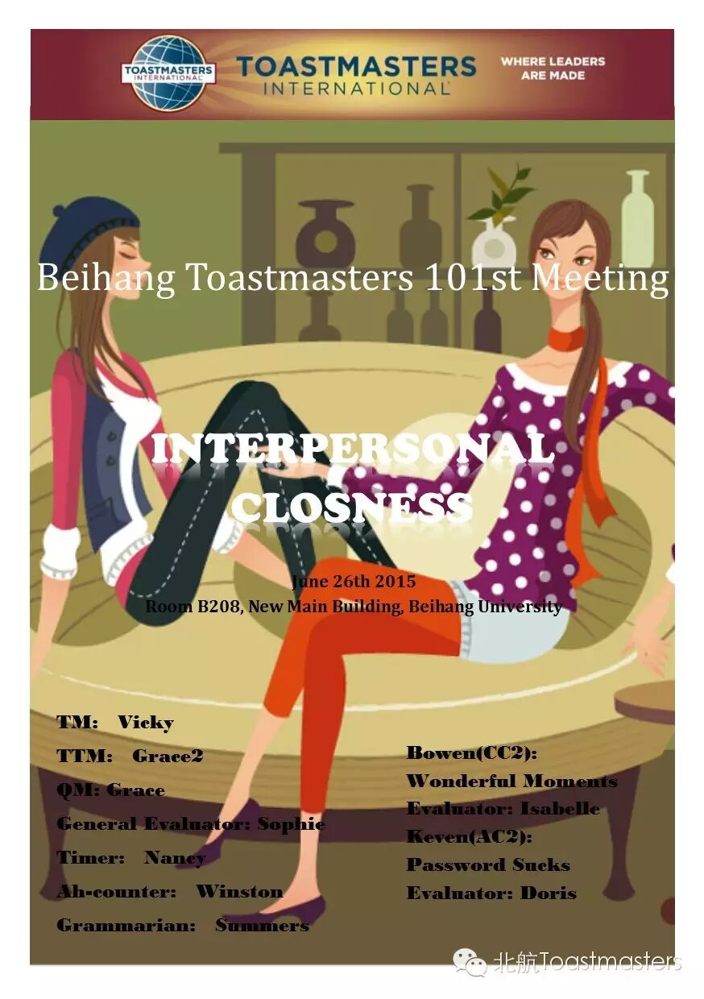
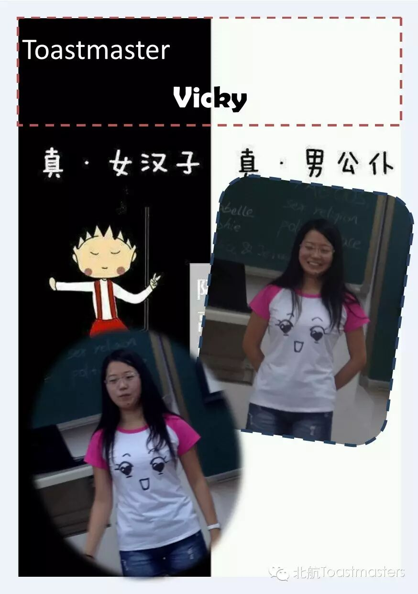
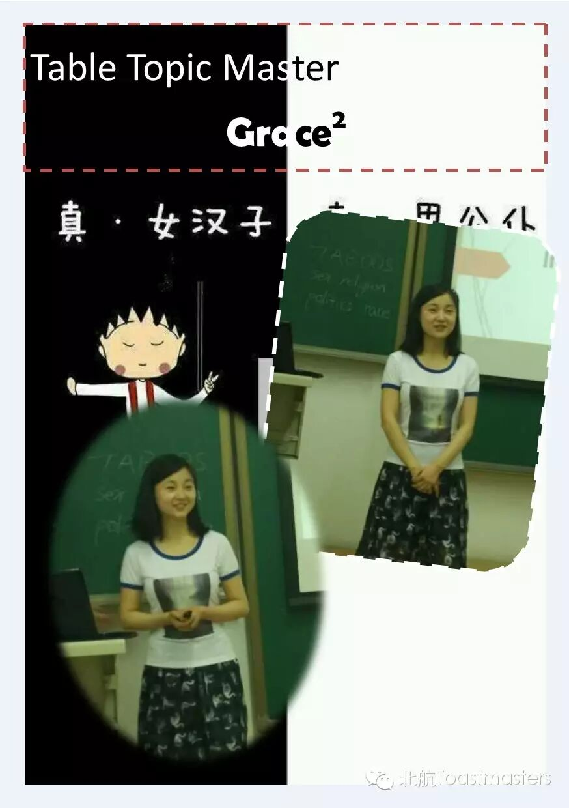
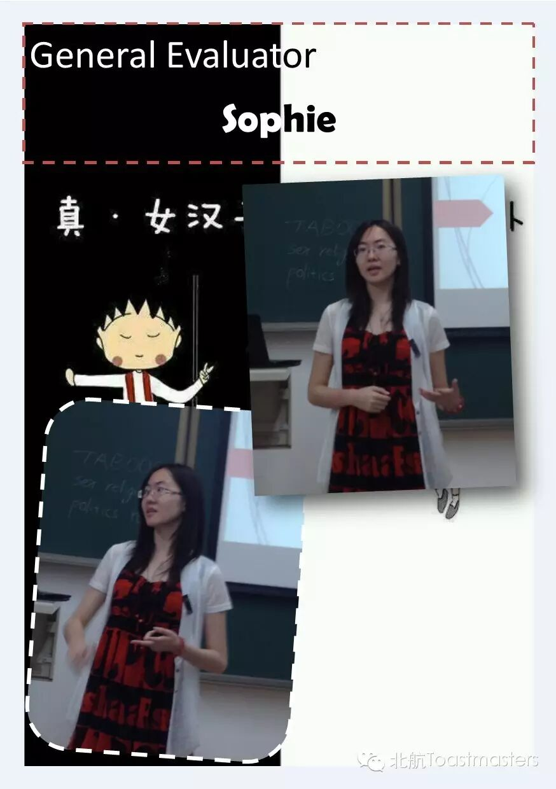
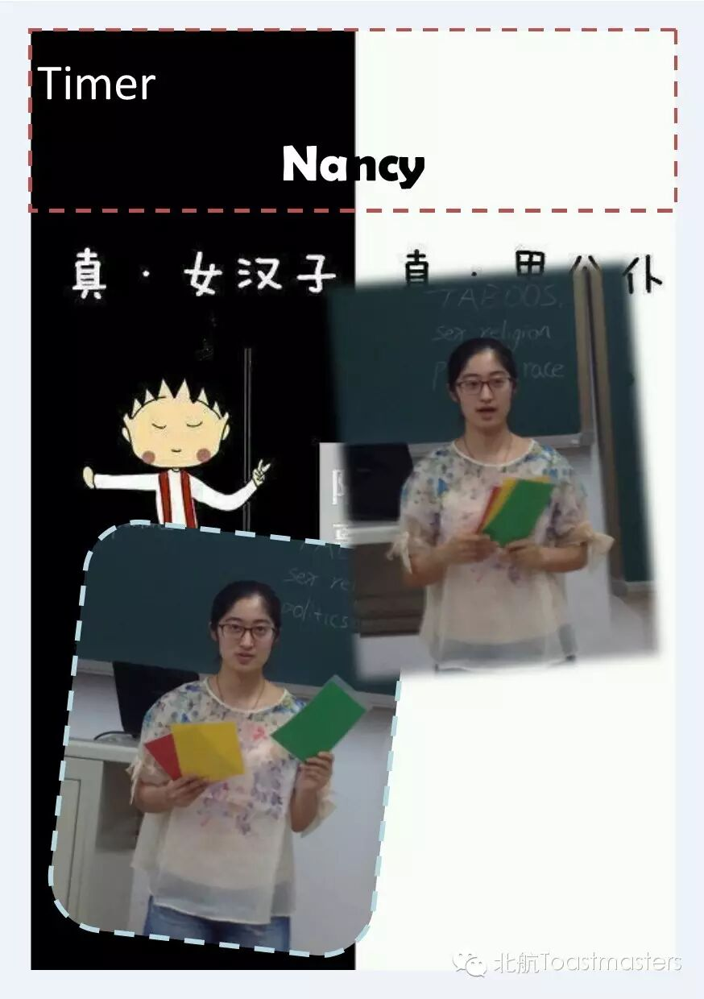
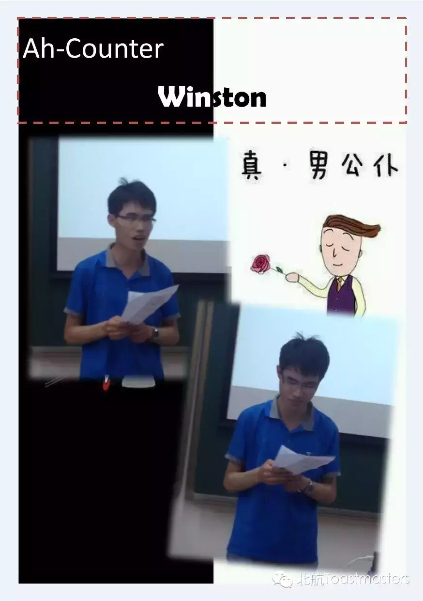
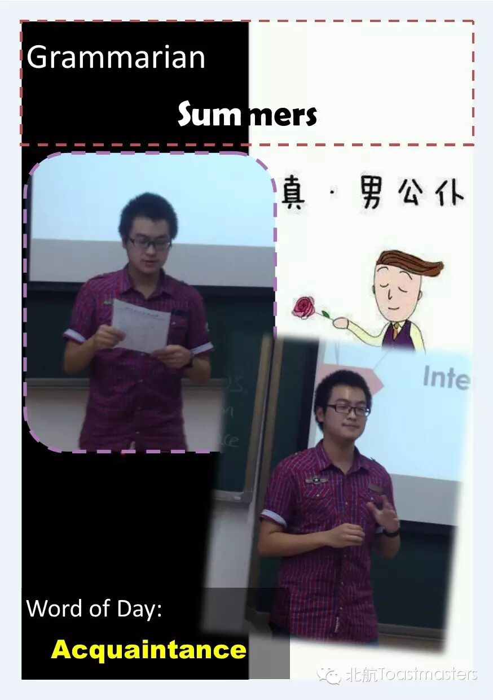
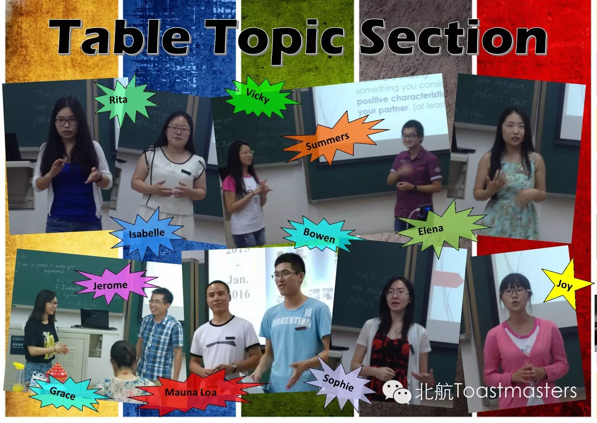
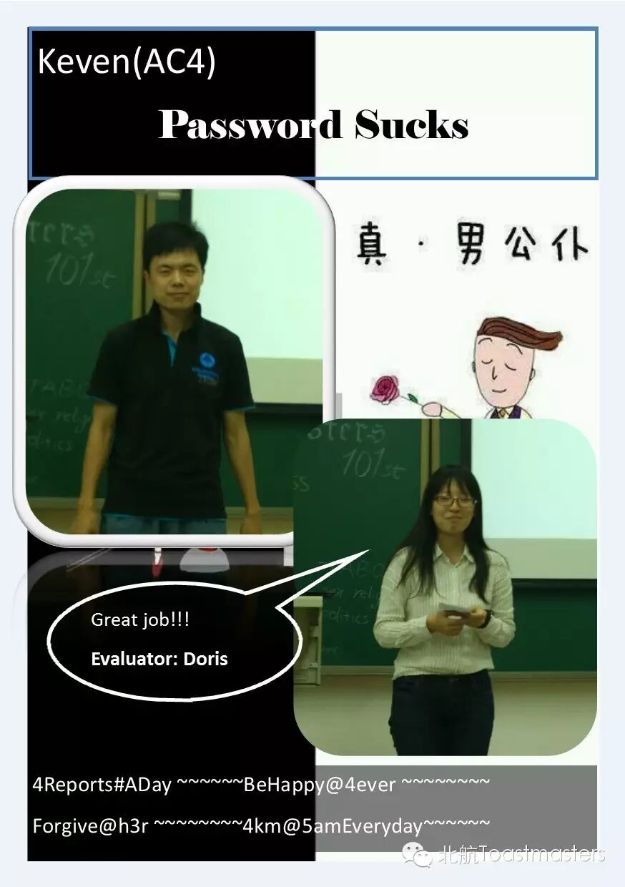
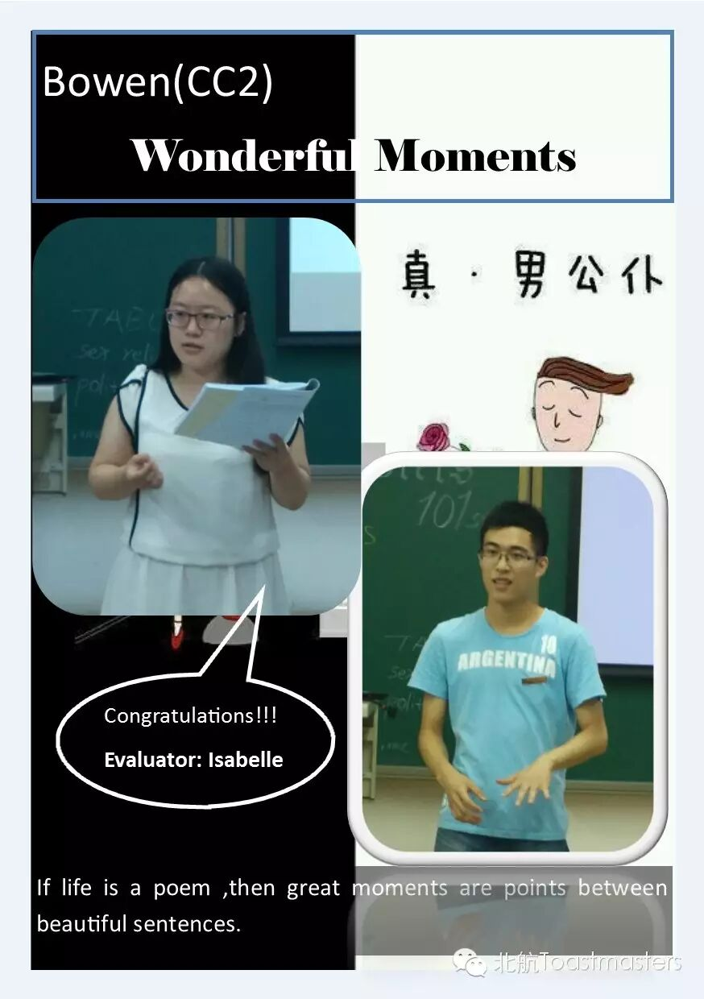
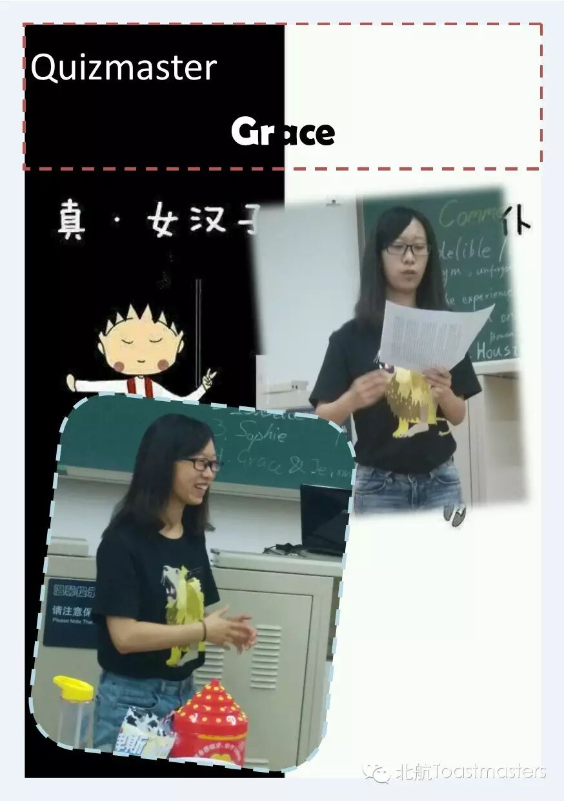
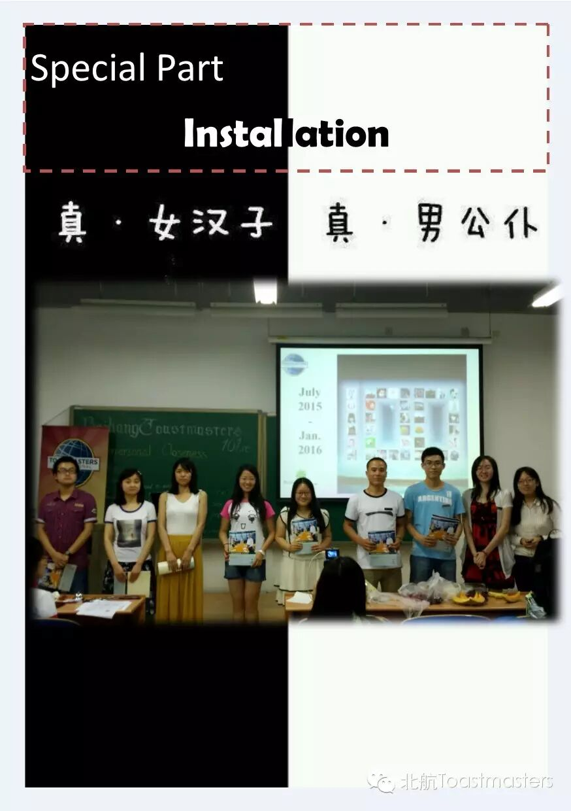
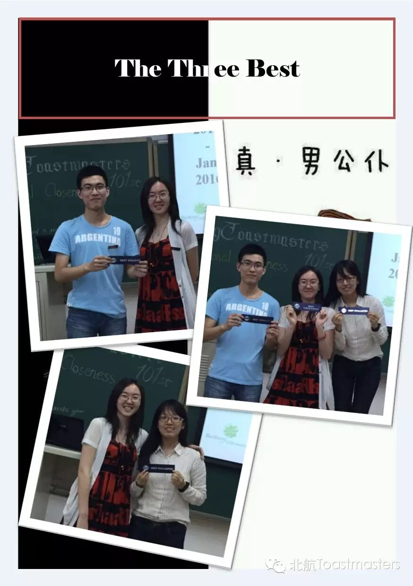
This meeting involves regular parts and the special installation
ceremony of new officers. Look forwards to excellent performance of the next officer team . We believe they will open and view a new area of beihang TMC!！
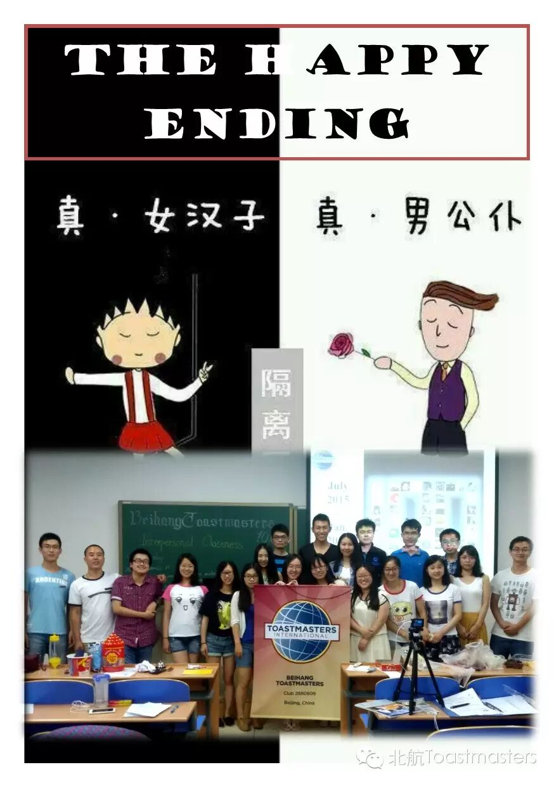